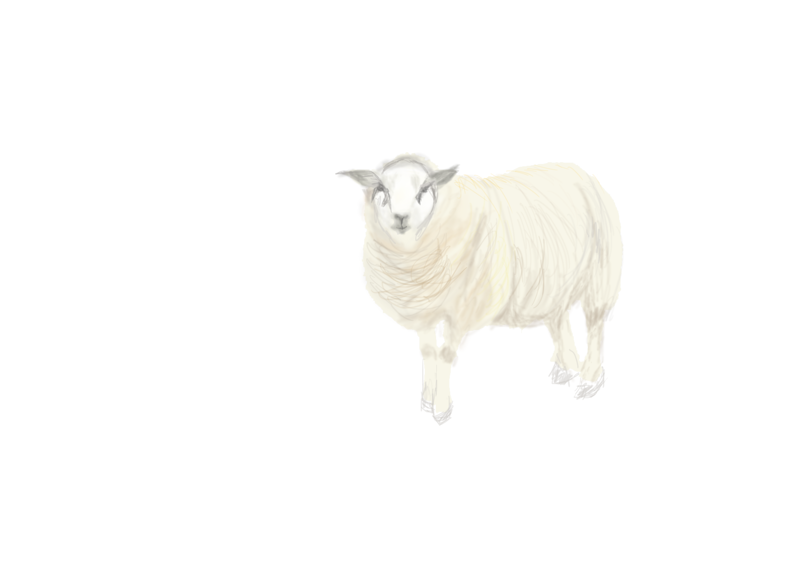

乳化劑
乳化劑是什麼?

卵磷脂和氫化卵磷脂通過減少剝落和恢復柔韌性來增強乾燥或受損皮膚的外觀。 這些成分還有助於通過降低待乳化物質的表面張力來形成乳液。
卵磷脂可以在所有生物體中找到，並且是神經組織的主要成分。它可以從大豆，玉米和蛋黃中獲得。儘管卵磷脂包括硬脂酸，棕櫚酸和油酸的甘油二酯，但卵磷脂的確切脂肪酸組成根據其來源而變化。
美國 CIR：專家小組評估了卵磷脂和氫化卵磷脂的安全性。CIR專家小組評估了科學數據並得出結論：卵磷脂和氫化卵磷脂在洗去型產品中使用是安全的。CIR專家小組限制了卵磷脂和氫化卵磷脂在留置產品中的濃度等於或小於15％。
蜂蠟和植物蠟有助於防止乳液分離成其油和液體組分，特別是在需要乳脂狀稠度的化妝品和個人護理產品中。 這些蠟還增加了固體和棒狀產品（如口紅）的脂質（油）部分的厚度，使其具有結構，允許平滑施用，並保持它們固體。當用於眼部化妝時，蠟會變硬但不會硬化產品，並且蠟的柔韌性和可塑性有助於施用。這些蠟也可以在脫毛產品中機械地去除不想要的頭髮。
Apis屬的蜂產生最大量的商業蜂蠟，在歐洲被稱為Cera Alba。新鮮的蜂蠟是白色的，但花粉，樹脂和其他天然雜質可能會使它變成淺黃色至深棕色。
美國 CIR：CIR專家小組審查了關於蜂蠟，小燭樹蠟，巴西棕櫚蠟和日本蠟的安全性數據，並指出這些成分在急性或亞慢性研究中不產生毒性，且在微生物代謝活化和不代謝活化時均無致突變性。 在皮膚刺激測試中，高濃度的這些成分會導致輕微的刺激，而含有這些成分的產品不會引起刺激。
蜂蠟和植物蠟有助於防止乳液分離成其油和液體組分，特別是在需要乳脂狀稠度的化妝品和個人護理產品中。 這些蠟還增加了固體和棒狀產品（如口紅）的脂質（油）部分的厚度，使其具有結構，允許平滑施用，並保持它們固體。當用於眼部化妝時，蠟會變硬但不會硬化產品，並且蠟的柔韌性和可塑性有助於施用。這些蠟也可以在脫毛產品中機械地去除不想要的頭髮。
巴西棕櫚蠟是商業植物蠟中最難的。它是一種堅韌，無定形，有光澤的蠟，顏色從骯髒的黃色變為棕色，綠色或白色。這種蠟有時被稱為巴西蠟。
美國 CIR：CIR專家小組審查了關於蜂蠟，小燭樹蠟，巴西棕櫚蠟和日本蠟的安全性數據，並指出這些成分在急性或亞慢性研究中不產生毒性，且在微生物代謝活化和不代謝活化時均無致突變性。 在皮膚刺激測試中，高濃度的這些成分會導致輕微的刺激，而含有這些成分的產品不會引起刺激。
小燭樹蠟在化妝品中的運用： 小燭樹蠟為淡黃色有光澤的脆硬的植物性蠟狀固體，具芳香氣味，有特種植物性樹蠟成分，具對溫度變化較穩定的特性。主要成分為烷基酯、游離醇、烴類化合物和游離酸等，主要用于膏霜類和唇膏類化妝品，以提高耐熱穩定性，也可作為軟蠟的硬化劑及蜂蠟和巴西棕櫚蠟的代用品。
小燭樹蠟是一種淡黃棕色堅硬脆的有光澤固體，從植物大戟表皮中提取。在歐洲，這種蠟被稱為Candelilla Cera。 特徵 (1)含有適度的植物性樹蠟成分； (2)由於收縮率小，當與別種蠟混合使用時，能使混合物在融點不增高的情況下固化； (3)具有保濕及防水性； (4)具有優良的乳化性。 (5)小燭樹蠟可提高其延展性、顏料分散均勻性、抗脫落等性質，使口紅光澤自然，嘴唇感覺柔嫩。 (6)小燭樹蠟還具有良好的乳化性、光澤性、透明性及可塑性，也是良好的粘度、硬度調整劑，在諸多領域廣泛被使用。
美國 CIR：CIR專家小組審查了關於蜂蠟，小燭樹蠟，巴西棕櫚蠟和日本蠟的安全性數據，並指出這些成分在急性或亞慢性研究中不產生毒性，且在微生物代謝活化和不代謝活化時均無致突變性。 在皮膚刺激測試中，高濃度的這些成分會導致輕微的刺激，而含有這些成分的產品不會引起刺激。
硼酸鈉和硼酸是無色或白色結晶或粉末。在化妝品和個人護理產品中，硼酸鈉和硼酸被用於各種產品類型的配方，包括面霜和乳液以及沐浴，頭髮和皮膚產品。
硼酸鈉和硼酸防止或延緩細菌生長，從而保護化妝品和個人護理產品免受腐敗。 它們也用於控制pH值，並在添加酸或鹼時將溶液的pH值變化降至最低。硼酸鈉和硼酸也有助於防止乳液分離成其油和液體組分。它們也用於改變液體化妝品和個人護理產品的厚度。
硼酸鈉也被稱為硼砂，因礦物質，硼砂和硼酸天然存在而成為天然礦物。硼酸鈉和硼酸都可以通過處理其他礦物如克爾奈特，鈉硼鈣石和硬硼酸鈣石來獲得。
美國 CIR：CIR專家小組評估了科學數據並得出結論：硼酸鈉和硼酸的濃度小於或等於5％，作為化妝品成分是安全的。CIR專家組還提醒說，化妝品和個人護理產品含有5％的游離硼酸鈉或硼酸不應用於嬰兒皮膚或受傷的皮膚。在2003年，作為計劃重新評估原料的一部分，CIR專家小組考慮了有關硼酸鈉和硼酸的新數據，並重申了上述結論。

角叉菜膠及其鹽的以下功能： 粘合劑：角叉菜膠，角叉菜膠鉀，角叉菜膠鈉 乳化穩定劑：角叉菜膠鈣，角叉菜膠鉀，角叉菜膠鈉 成膜劑：角叉菜膠鈣，角叉菜膠鉀，角叉菜膠鈉 頭髮調理劑：角叉菜膠 增粘劑 - 水溶液：角叉菜膠，角叉菜膠鈣，角叉菜膠鉀，角叉菜膠鈉 卡拉膠被作為凝固劑、增稠劑、乳化劑、懸浮劑、澄清劑、穩定劑和持水劑，在食品和其他工業得到廣泛的使用。卡拉膠是食品添加劑的一種。卡拉膠的優勢是觸變的—在剪應力下會變稀，而且一旦剪應力移除，將恢復粘性。這意味著它們可以被容易地傳輸，但可在傳輸後變硬。
角叉菜膠是大型高度柔性的分子，捲曲形成螺旋結構。這使他們能夠在室溫下形成凝膠。 它們在食品和其他工業中作為增稠劑和穩定劑被廣泛使用。一個特別的優點是它們在剪切應力下變薄，並且一旦應力消除就恢復它們的粘度。這意味著它們很容易泵送，但之後會再次變硬。
歐盟 FDA：根據歐盟化妝品指令的一般規定，角叉菜膠及其鈣，鉀和鈉鹽可用於在歐洲銷售的化妝品和個人護理產品。
石蠟和微晶蠟來源於石油。 在化妝品和個人護理產品中，這些蠟用於許多類型的產品，包括唇膏，嬰兒用品，眼部和麵部化妝品，以及指甲護理，護膚品，防曬霜，防曬霜，香料和非著色頭髮製劑。
地蠟和其他蠟增稠化妝品和個人護理產品的脂質（油）部分，並幫助防止乳液分離成其油和液體組分。 這些蠟可以減少棒狀產品的脆性，增加唇膏的強度和穩定性。這些蠟也將壓縮的蛋糕的成分結合在一起。
Montan蠟是通過提取褐煤（木質煤）獲得的蠟。粗蠟是棕色的，但在純化後變成白色。石蠟和微晶蠟是石油的蒸餾產物。石蠟固化成板，而微晶蠟凝固成小的，定義不明確的針。合成蜂蠟是脂肪酸酯，脂肪酸，脂肪醇和高分子量碳氫化合物的混合物。合成蜂蠟的性質類似於蜂蠟。
美國 CIR：評估了地蠟和其他化石和合成蠟的安全性。CIR專家小組評估了科學數據並得出結論：地蠟，Ceresin，Montan蠟，石蠟，微晶蠟，乳化蠟，合成蠟和合成蜂蠟可安全地用於化妝品和個人護理產品。 在2003年，CIR專家小組考慮了地蠟和其他蠟的新數據，並重申了上述結論。 CIR專家小組認為這些蠟不會導致皮膚過敏。 當測試含有這些成分的製劑時，它們不產生皮膚刺激並且製劑不具有光毒性。
地蠟和其他蠟增稠化妝品和個人護理產品的脂質（油）部分，並幫助防止乳液分離成其油和液體組分。 這些蠟可以減少棒狀產品的脆性，增加唇膏的強度和穩定性。這些蠟也將壓縮的蛋糕的成分結合在一起。
地蠟是軟質頁岩附近發現的天然化石蠟。商業應用中使用的大部分地蠟是在東歐開采的。原油地蠟是黑色的; 精煉後，其顏色從黃色變為白色。它在老化時變硬，硬度根據其來源和改進而變化。地蠟是由地蠟純化得到的白色至黃色蠟狀碳氫化合物混合物。
美國 CIR：評估了地蠟和其他化石和合成蠟的安全性。CIR專家小組評估了科學數據並得出結論：地蠟，Ceresin，Montan蠟，石蠟，微晶蠟，乳化蠟，合成蠟和合成蜂蠟可安全地用於化妝品和個人護理產品。 在2003年，CIR專家小組考慮了地蠟和其他蠟的新數據，並重申了上述結論。 CIR專家小組認為這些蠟不會導致皮膚過敏。 當測試含有這些成分的製劑時，它們不產生皮膚刺激並且製劑不具有光毒性。
乳化蠟，合成蠟和合成蜂蠟是製造蠟。 在化妝品和個人護理產品中，這些蠟用於許多類型的產品，包括唇膏，嬰兒用品，眼部和麵部化妝品，以及指甲護理，護膚品，防曬霜，防曬霜，香料和非著色頭髮製劑。
地蠟和其他蠟增稠化妝品和個人護理產品的脂質（油）部分，並幫助防止乳液分離成其油和液體組分。 這些蠟可以減少棒狀產品的脆性，增加唇膏的強度和穩定性。這些蠟也將壓縮的蛋糕的成分結合在一起。
乳化蠟由鯨蠟醇和硬脂醇的混合物製成和失水山梨糖醇的脂肪酸酯的聚氧乙烯衍生物。乳化蠟用於某些藥物，並被列入國家處方集（NF）。當化妝品或個人護理產品中使用的乳化蠟符合國家處方集中列出的標準時，可將其標記為乳化蠟NF合成蠟是低分子量乙烯聚合物的混合物。
美國 CIR：評估了地蠟和其他化石和合成蠟的安全性。CIR專家小組評估了科學數據並得出結論：地蠟，Ceresin，Montan蠟，石蠟，微晶蠟，乳化蠟，合成蠟和合成蜂蠟可安全地用於化妝品和個人護理產品。 在2003年，CIR專家小組考慮了地蠟和其他蠟的新數據，並重申了上述結論。 CIR專家小組認為這些蠟不會導致皮膚過敏。 當測試含有這些成分的製劑時，它們不產生皮膚刺激並且製劑不具有光毒性。
在化妝品和個人護理產品中，黃原膠可用作粘合劑，乳化穩定劑，皮膚調理劑 - 其他，表面活性劑 - 乳化劑或增粘劑 - 水溶液。 據報導，生物糖膠-1可用作皮膚調理劑 - 其他。
黃原膠和生物糖膠-1都是平均分子量為1,000,000或更高的非常大的分子。 黃原膠在攪拌下容易溶於水，在低濃度下產生高度粘稠的溶液。
美國 CIR：基於大分子量，CIR Expert Panel確定黃原膠膠和生物糖膠-1不會通過皮膚吸收。CIR專家小組審查的數據表明，黃原膠不是生殖或發育毒物。其他多醣膠的研究並未顯示遺傳毒性效應。黃原膠和生物糖膠-1不被認為是皮膚刺激劑或敏化劑。 根據關於黃原膠和其他多醣膠的現有數據，CIR專家小組認為，黃原膠膠和生物糖膠-1在化妝品中使用是安全的。黃原膠在21 CFR 172.695中被確定為食品添加劑，可按照規定的條件安全使用。
波姆是用於一系列主要由丙烯酸製成的聚合物的術語。卡波姆是白色蓬鬆粉末，但常用作化妝品和個人護理產品中的凝膠。 卡波姆可用於多種產品類型，包括皮膚，頭髮，指甲和化妝產品以及潔牙劑。
卡波姆幫助將不溶性固體分散或懸浮在液體中。它們也用於防止乳液分離成其油和液體組分。卡波姆通常用於控制化妝品和個人護理產品的一致性和流動性。
卡波姆是由稱為單體的較小化合物製備的大分子。用於製備卡波姆聚合物的單體是丙烯酸和聚鏈烯基聚醚。 卡波姆在化學上都相似，分子量和粘度各不相同。卡波姆能夠吸收和保留水分，這些聚合物可膨脹到其原始體積的許多倍。 在化妝品或個人護理產品的標籤上，名稱卡波姆可以與諸如910,934,940,941和934P等數字相關聯。這些數字表示分子量和聚合物的特定組分。
美國 CIR：審查了急性口服研究，顯示卡波姆聚合物攝入時毒性較低。 用卡波姆進行的臨床研究表明，這些聚合物在濃度高達100％時對皮膚刺激和致敏的潛力很低。卡波姆聚合物表現出光毒性和光觸變應原性的低潛力。
三乙醇胺（TEA）是透明，無色，稠密的液體，具有氨似氣味。 在化妝品和個人護理產品中，三乙醇胺可用於一些化妝產品，如眼線，睫毛膏，眼影，腮紅，化妝底座和粉底，以及香水，護髮產品，染髮劑，波浪套裝，剃須產品，防曬霜，皮膚護理和皮膚清潔產品。乙醇胺可用於某些燙髮和染髮劑和顏色。
TEA，DEA和乙醇胺有助於通過降低待乳化物質的表面張力形成乳液，從而將水溶性和油溶性成分混合在一起。它們也用於控制 化妝品和個人護理產品的 pH值。 DEA本身很少用於產品，但可以與其他物質結合使用，並轉化為與DEA不再化學相同的新成分（即DEA鹽）。這種“化學反應”導致了一種非常穩定並且不容易分解的新物質。椰油酰胺DEA和月桂酰胺DEA是這些成分的例子。DEA鹽起到表面活性劑，乳化劑，增粘劑，頭髮或皮膚調理劑，泡沫促進劑或抗靜電劑的作用。應該注意的是，除了化妝品和個人護理產品之外，DEA和DEA的衍生物還用於其他產品。例如，DEA和DEA衍生物已被批准用於幾種食品相關應用，主要是食品包裝。與任何化學反應一樣，可能有不可避免的少量起始物質（在這種情況下為DEA）被帶入最終產品中。這些低殘留水平不會影響新配料的使用或性能，並且在生產過程中將水平控制在安全水平。TEA更常用於化妝品和功能 表面活性劑 或 pH調節劑。 其他含有TEA的成分可用作表面活性劑和護髮素或皮膚調理劑。乙醇胺起pH調節劑的作用。其大部分鹽起到表面活性劑的作用; 一些乙醇胺鹽用作pH調節劑，頭髮固定劑或防腐劑。
美國 CIR：認識到三乙醇胺和二乙醇胺是溫和的皮膚和眼睛刺激物，刺激隨著濃度的增加而增加。乙醇胺對皮膚和眼睛都有刺激作用，乙醇胺與皮膚接觸時間越長，刺激的可能性就越大。據報導，乙醇胺主要用於洗去型護髮產品中。 CIR專家組還指出，在存在N-亞硝基化劑的情況下，三乙醇胺和二乙醇胺可能會引起致癌性亞硝胺N-亞硝基二乙醇胺。因此，在配方中不應使用TEA和DEA與N-亞硝基化劑。